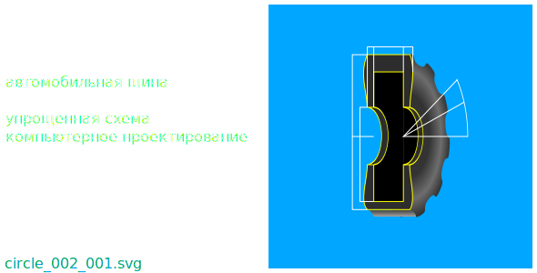

Компьютерное проектирование автомобильных шин может дать возможность уменьшить время разработки прототипа проектируемой автомобильной шины.
Используя компьютерное проектирование автомобильных шин возможно за малое время получить масовые, весовые и инерционые параметры проектируемой автомобильной шины.
Появляется возможность быстро сравнивать проектируемые автомобильные шины с отличающимися характеристиками, в большом количестве, не просчитывая каждую новую идею своими усилиями.
Автомобильные шины спроектированые с использованием компьютерных програм меньше подвержены влиянию человеческого фактора на стадии проектирования, например в утомительных для обычного человека повторяющихся арифметических расчетах с нецелыми числами, где, обычно, компьютерная програма совершает меньше ошибок чем человек.

Автомобильные шины проектируемые на компьютере могут быть представлены в виде параметрической структуры. В этом случае изменение параметров перестраивает всю конструкцию автоматически, не нарушая связи проектируемой конструкции.